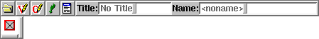
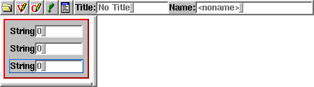
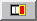
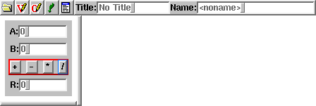
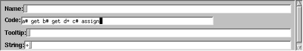
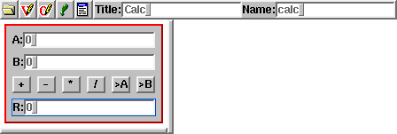
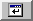

How do you edit such a user interface? Formating buttons and text fields is done by the system, therefore not the task of the programmer, who only has to fix the logical arrangement.
The project therefore is hierarchically arranged. The topmost hierarchy are the dialog windows. These windows understand two additional methods, open and modal-open which allows to create both non-modal and modal dialogs. The user then creates a framework of horizontal and vertical boxes inside the dialog. These boxes are filled with contents and glues then.
A examples will show how to use Theseus. The first creates a small calculator operating on integers. Create a "New Dialog" with the "Edit" menu. This is the dialog bar at the start of the project:
First put the three infonumberfields inside the starting box, they will be put under each other.
Beneath the two input fields the operation buttons should be arranged one aside each other. A horizontal box (hbox) does the job, with four buttons in it. First click to , and then to hbox. Then set again to . Click into the newly created box. Click off the vskip button: that makes it nicer. Hit four times on "Button". Now these objects need a useful text. Therefore you left-click each object (in edit mode), and type in the text. Hit Esc to clear the text field first.
To reference the input field, each one must have an internal name. Choose edit mode, right-click to the fields and enter the name (a#, b#, and c#). Now you can insert code, i.e. for the operation +. Corresponding to the example below, the other code is inserted, too. Middle-click on the operation buttons and enter the code
The code looks as follows, for +, -, *, and /:
a# get b# get d+ c# assign a# get b# get d- c# assign a# get b# get d* c# assign a# get b# get drop ud/mod c# assign dropBut stop! Maybe it's useful to take the result and copy it to one of the input buttons for reuse. Thus two additional buttons are required, and to make it nice, all buttons should have the same size (with ``tabbing'' box style). The window must have a title, and a name, too. 
The added code is for >A and >B
c# get a# assign c# get b# assign
Now you can try the result by pressing the  icon. Theseus generates the code and starts a new invocation of bigFORTH which compiles it and starts the application.